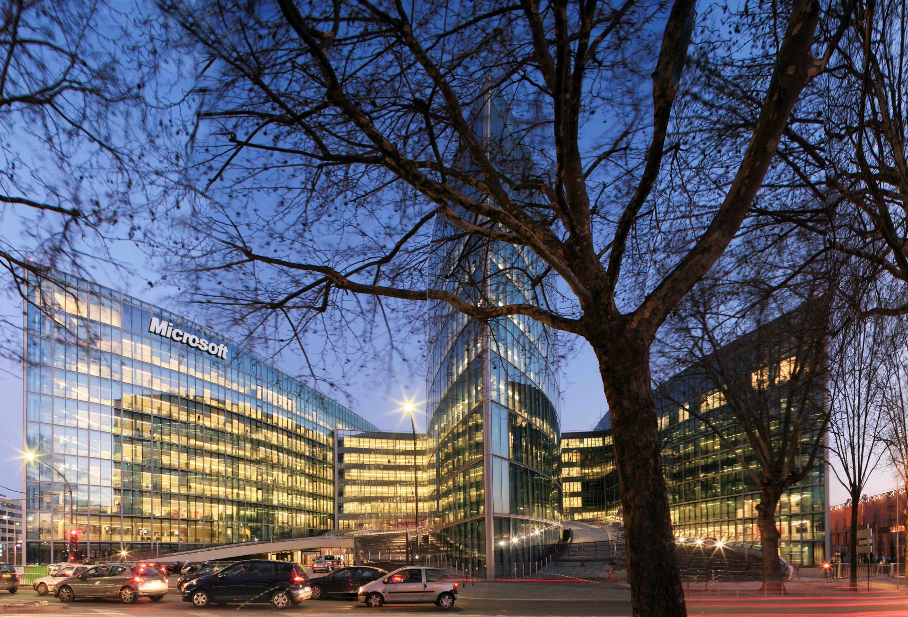
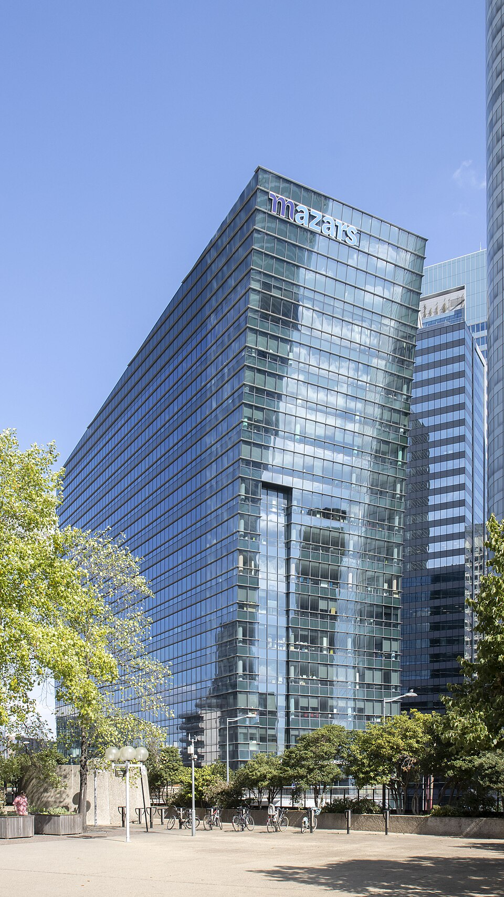

Durant mon stage chez Arquitectonica Europe, j'ai participé à la création d'une base documentaire destinée à centraliser les connaissances de l'agence. Ce travail a permis de structurer les expertises, les références de projets et les méthodes de conception afin d'alimenter le site internet, les supports de communication et les réponses aux appels d'offres.
Mes missions avaient pour objectif de structurer les connaissances de l'agence et de valoriser les expertises développées par Arquitectonica Europe à travers une documentation claire, homogène et facilement exploitable.
Recherche, analyse et synthèse des informations relatives aux expertises, aux projets et aux méthodes de conception.
Organisation des données selon une architecture documentaire cohérente afin d'assurer une consultation simple et efficace.
Création de contenus destinés au site internet permettant de présenter les savoir-faire et les réalisations d'Arquitectonica Europe.
Durant mon stage, j'ai également suivi plusieurs projets de rénovation tertiaire afin de mieux comprendre le déroulement d'un projet architectural, depuis les premières réflexions jusqu'au développement des solutions techniques.

Projet de rénovation d'un immeuble tertiaire permettant d'observer les différentes étapes de conception et la collaboration entre les architectes, les ingénieurs et les différents intervenants.

Projet de restructuration d'espaces de bureaux intégrant des enjeux de flexibilité, de bien-être des utilisateurs et de performance environnementale.
Les recherches réalisées durant mon stage ont conduit à la création de fiches détaillées présentant les principaux domaines d'expertise d'Arquitectonica Europe.
Afin de faciliter les recherches et la création de contenus, l'ensemble des informations collectées a été organisé en plusieurs catégories.